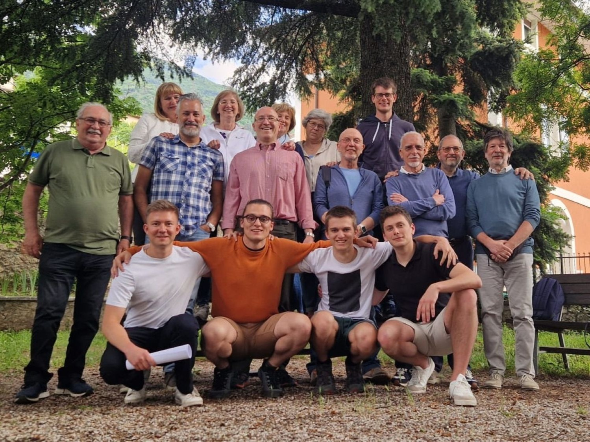
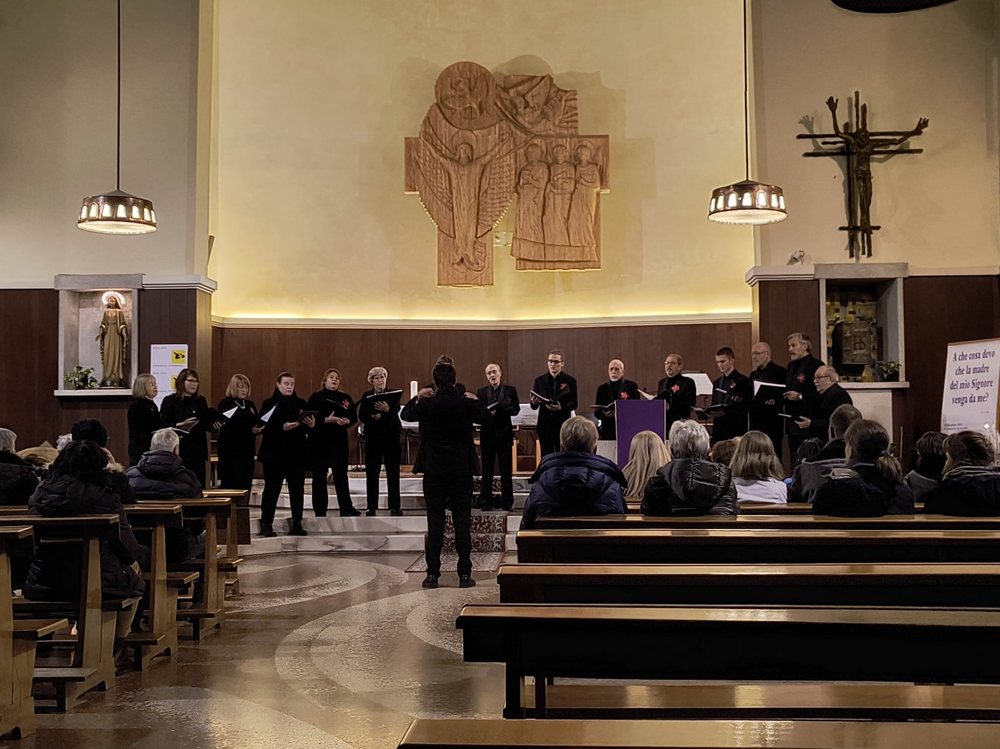
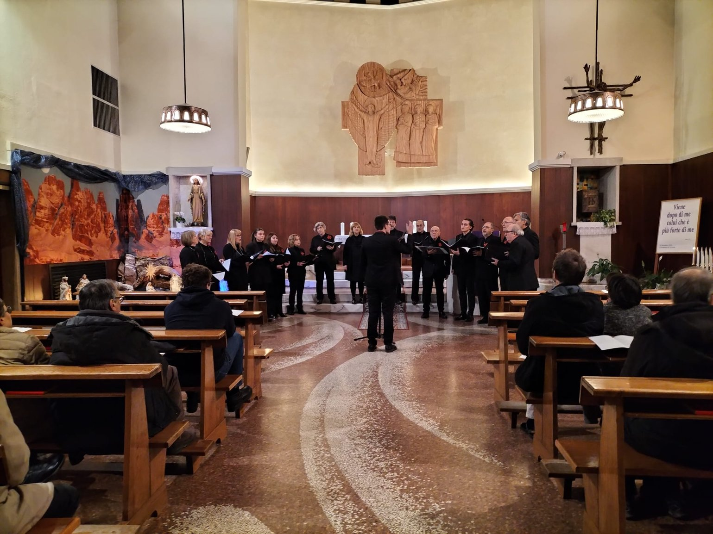
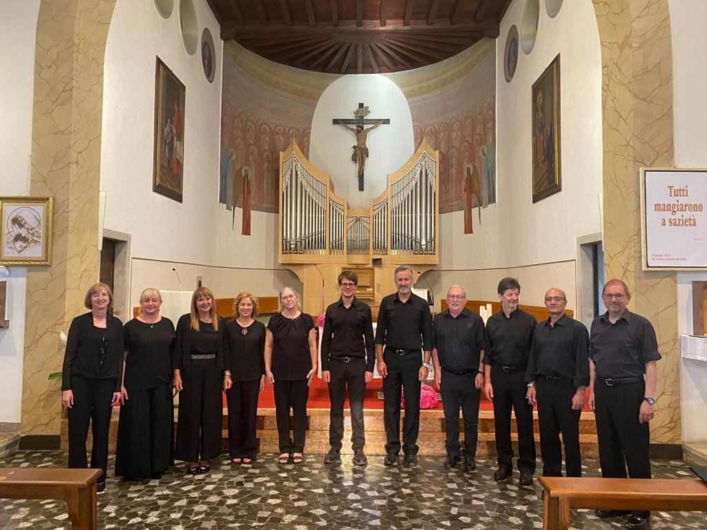
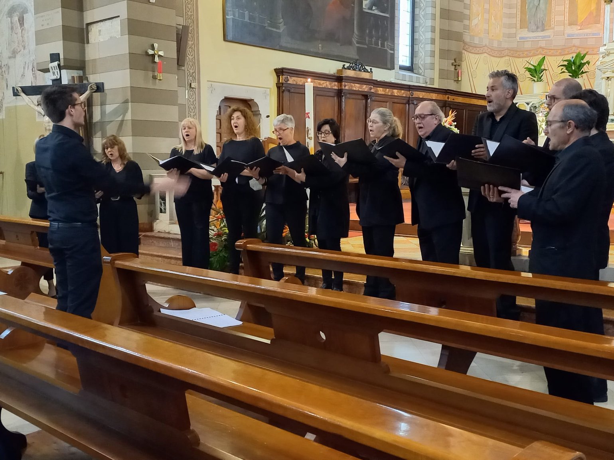
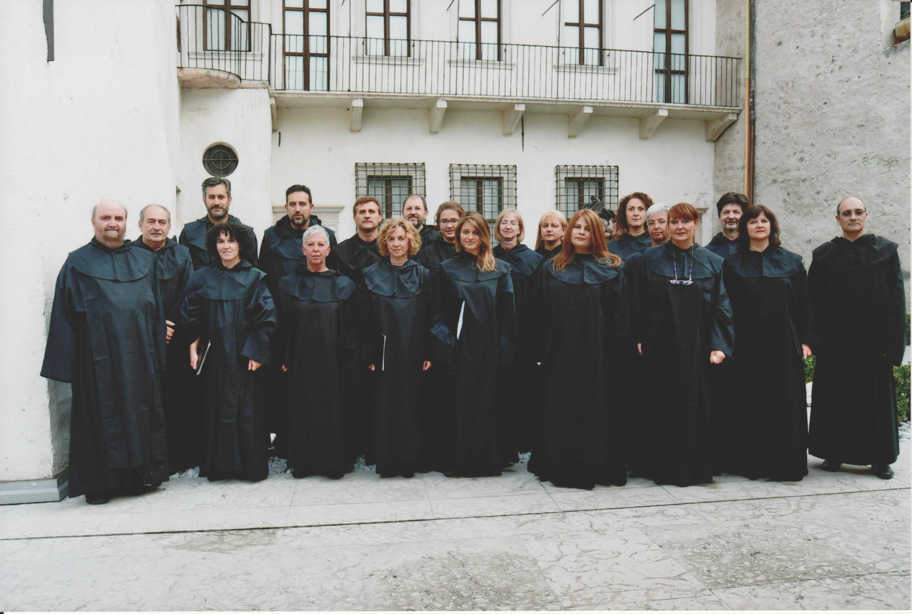
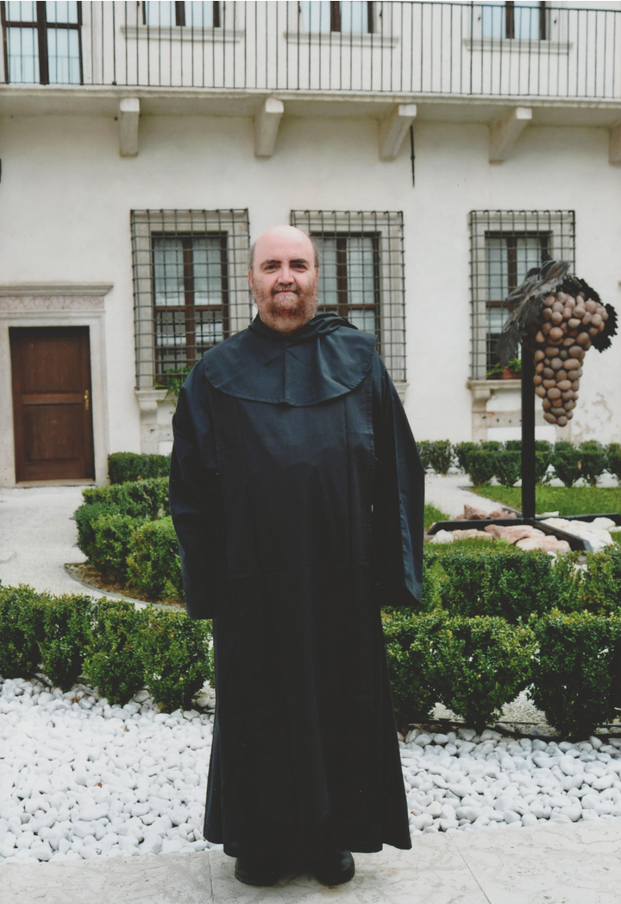
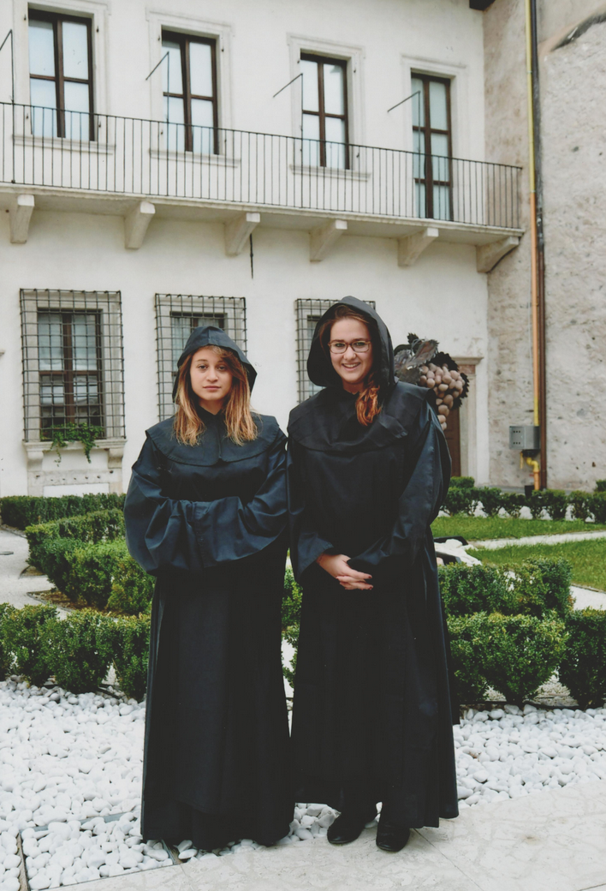

Corso di Vocalità
Concerto al Parco Massimiliano

Parco Massimiliano

Concerto alla Chiesa di Cristo Re
Concerto all'Arcivescovile



I Luoghi del Concilio - Palazzo Roccabruna a Trento


Concerto Passato
Concerto Passato 2